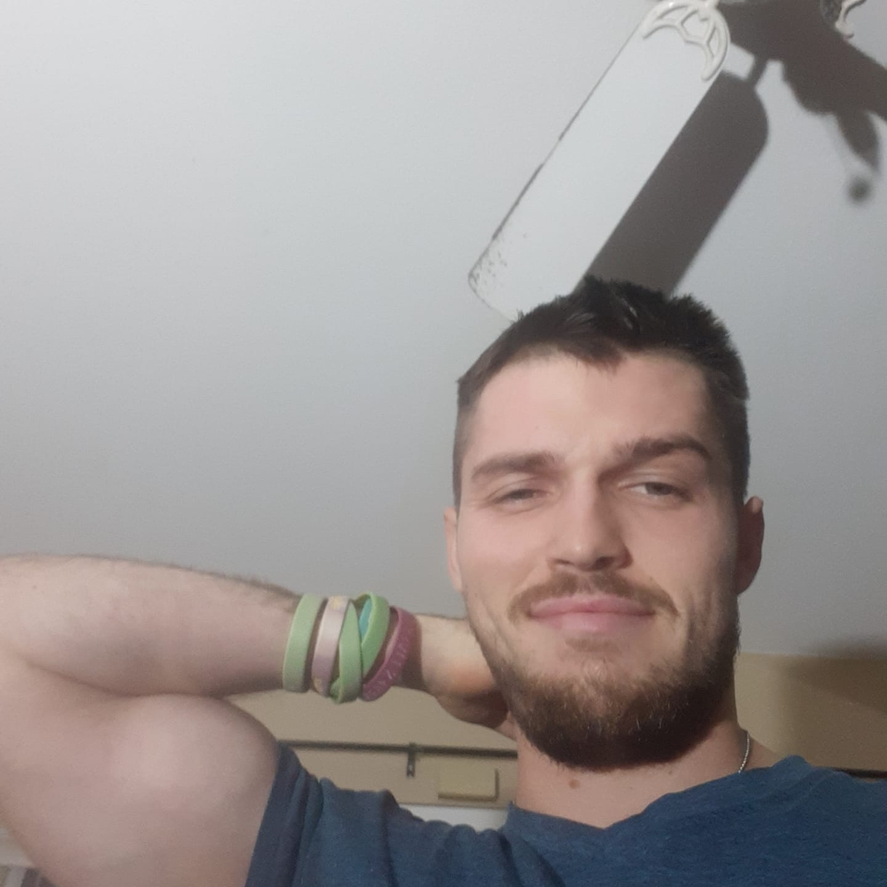

Home
Caption: I choose this picture of myself because it reflects my discipline and self-confidence. First, it shows me flexing my muscles after a workout late at night which exemplifies my strength. It also shows my strong sense of self worth as I look directly at the camera to show my effort to imrpove. Furthermore, I am smiling to show that I am satisfied with my effort and am proud of the things that I have accomplished. This is my most discipline version of myself when I was abstained from all addictive behaviors and was regularly working out consistently. This is a version of myself and the standard by which I measure all other versions of myself. Thus, this represents Drew at peak self improvement.
My name is Drew Gonzales. I am a software developer in training and who has a great diverse range of knowledge in a wide range of technologies and programming languages that is inclusive of C++, python, java, SQL, kubernetics, linux and much more. My passion for technology came one day when I realized that innovation cannot be attained from qualitative meditative time of thinking hut rather it must come from individuals who do innovative thinking and push the boundaries of what is possible by having bounded downsides and unbounded upsides. This personal website is an effort to demonstrate my wide range of interests, projects I will work on as an electrical Engineer/Inventor and possible ideas I intend to do in the future. This website will be inclusive of the following:
- Favorite links page for websites I commonly go to
- Feedback page to where you can give me feedback on how we can improve this website accordingly
- An index or home page which you are currently on that introduces who I am and what you can expect from the website
- Resume site to where you can see my active experience, what I've worked on, and where my current employment resides
- Engineering And AI page is the page that discusses my future engineering company and the potential objectives that I will have for this startup company going forward. This will consist of things I feel that limiting the engineering field from high levels of innovation, improvement to existing technologies and possible bottle-necks that exist in markets that are being neglected that could benefit future entrepreneurs and consumers at large.
Interests & Hobbies
- Software Development
- Electrical Engineering
- Playing Chess
- Reading Sci-fi Novels
- Traveling
Personal Trivia
- I'm obsessed with American Idol
- Can solve a Rubik's cube in under a minute
- Have a cat named Quantum
About the Picture
The picture above is from one of my memorable trip I chose this picture as it reminds me of the aspiration and vision I hold for my future endeavors. Specifically, this picture was during the pandemic period when we were all on perpetual lockdown and when I was working my absolute hardest to discipline myself accordingly. Having discipline is key and this was after a workout to where I am flexing to demonstrate my power, strength and unending resolve to keep pushing the boundaries of what is possible. During this time I had a great saying that I always used which was you need to be who it is you want to become and in doing so you can become a better human being in the process. I really like this picture also because I think I look handsome and very attractive which also shows the huge turn around I made by religiously following a strong schedule of self-disciplien.
A bit more about me
I was born and raised in Riverside, California, and studied at UCR (University of California, Riverside). This mix of local upbringing and quality education instilled in me a passion for both technology and teaching. Over the years, I've tried to mentor young tech enthusiasts and help them find their path in this ever-evolving world of technology.